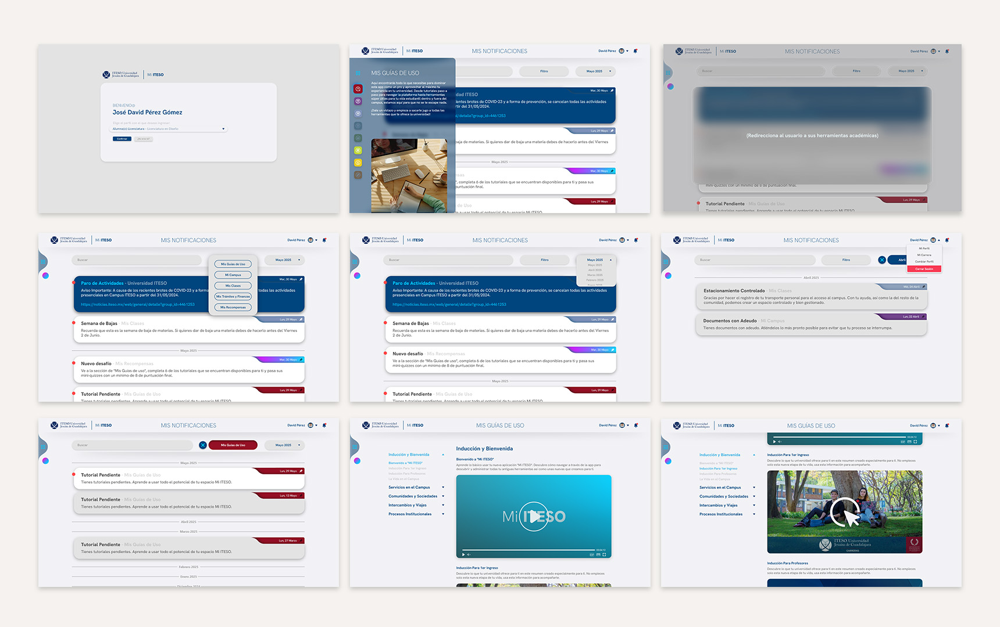
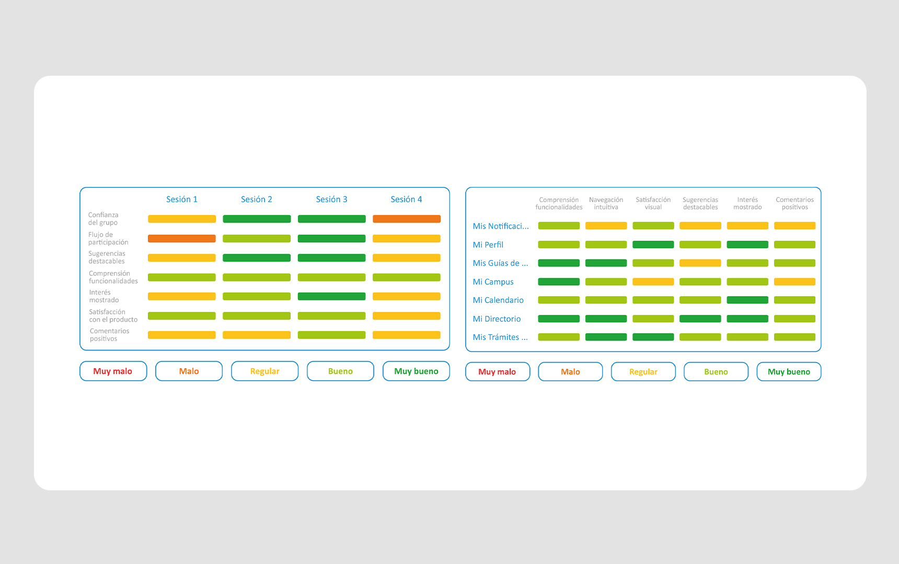

MI ITESO
College App
Saved the best for last? I appreciate your thorough
review of my work.
...
During my tenure as a designer at Ulab, one of my most significant and
high-impact projects was Mi ITESO. Ulab operates as an in-house venture of ITESO University. The
fragmented nature of the university's digital tools and the evolving lifestyle of its community
demanded a unified platform. I designed this solution to converge information for students, faculty,
and employees while increasing the retention rate across all institutional systems.
During my tenure as a designer at Ulab, one of my most
significant and
high-impact projects was Mi ITESO. Ulab operates as an in-house venture of ITESO University. The
fragmented nature of the university's digital tools and the evolving lifestyle of its community
demanded a unified platform. I designed this solution to converge information for students, faculty,
and employees while increasing the retention rate across all institutional systems.
Great choice to start with.
...
Year: 2023-2025
Skills: UX/UI
Design, Product Design, UX Research and Testing, User Journeys, Branding, Storytelling
Role: Senior Designer and UX Tester
Year:
2023-2025
Skills: UX/UI
Design, Product Design, UX Research and Testing, User Journeys, Branding, Storytelling
Role: Senior Designer and UX Tester
(The following video provides an illustrative introduction to the
project)
For this project, I worked with the university’s institutional identity while designing specifically for
a Liferay development (an open-source digital experience platform built for modular and unified
solutions). This technical framework provided a clear and decisive direction for the project from the
start.
My research led to the decision to incorporate gamification and experience personalization
to increase user retention. By encouraging the socialization of ideas and data, these features foster a
stronger sense of community and deeper integration into the university’s daily lifestyle.


I implemented gamification through an Achievement and Reward system. As users complete both virtual and
physical tasks, the university leverages the platform to improve its internal KPIs. Users earn
achievements to personalize their experience and unlock rewards or discounts at on-campus stores.
Consequently, the university benefits from more active participation in document updates, event
attendance, group follow-ups, and service demand.
Certain screens are partially hidden to respect client confidentiality.
Images may unlock when the content is no longer sensitive.


The project’s extensive scope inevitably required the involvement of multiple stakeholders across the
university to unify all systems and connect information. To address this, I incorporated representatives
from these various departments and conducted significantly broader UX testing, applying multiple rounds
of research and iterative adaptations.


